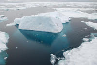

 |
2009 a été une année décisive pour la lutte contre les changements climatiques. A la fin de l’année s'est tenu la Conférence de Copenhague, sous l’égide de l’ONU. La communauté internationale doit y trouver un accord pour répondre au péril climatique. Notre planète s'échauffe anormalement, avec de très graves perturbations à l'avenir si nous ne réagissons pas : canicules et désertifications, inondations et tempêtes, disparition des glaciers et de la banquise, montée du niveau des mers... 1 million d'espèces animales et végétales pourraient disparaître en 50 ans et des millions de personnes seront affectées. Si rien n’est fait, jusqu’à un milliards d’êtres humains seront jetés sur les routes de l’exode climatique d’ici au milieu du siècle. Avec les problèmes alimentaires, sanitaires et sécuritaires que cela implique. |
C'est l'accumulation dans l'atmosphère des gaz à effet de serre qui perturbe le climat de la Terre. Ces gaz proviennent notamment de la plupart des activités humaines : transports, industrie, agriculture, production d'énergie, chauffage...
Il est impératif de changer nos modes de vie et de nous développer autrement pour réduire drastiquement ces gaz polluants et rétablir l'équilibre du climat. C'est possible car les solutions existent : il nous reste à les mettre en place tous ensemble !